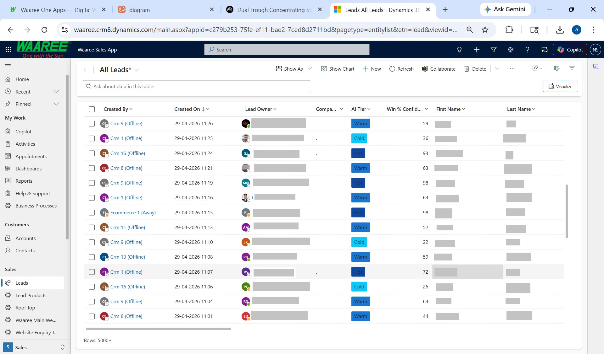
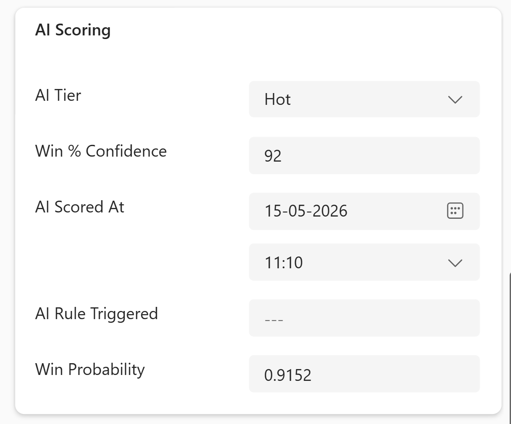
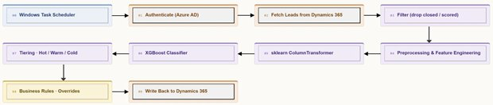

AI Lead Propensity Scoring.
Production lead-scoring system live inside Microsoft Dynamics 365 CRM — reps work an AI-ranked queue instead of arrival order.

▶ Ranked queue inside Dynamics 365 · names redacted
▶ AI Scoring panelWaaree receives ~7,000 leads/month with under 10% converting. Reps had no way to know which to call first.
SolutionAn AI system that scores every new lead 0–100 within minutes and tags it Hot / Warm / Cold directly inside the CRM — reps now work an AI-ranked queue instead of arrival order.
AS-IS → TO-BE
01 Architecture & pipeline.

OAuth2 against Azure AD → OData v4 calls to Dataverse. Incremental sync — only fetches leads created or modified since the last successful run; state persisted in last_run_timestamp.txt.
Drops closed leads (Won / Lost / Junk) and leads already scored — strict score-once policy.
Case-fold + rare-category collapse (n < 30 → "Other"); temporal features from timestamps; description-text mining for size (kW), timeline, and sentiment; missingness flags as features; log1p + 99th-percentile clip on numerics; PIN-prefix geographic features.
sklearn ColumnTransformer — OrdinalEncoder for low-cardinality, smoothed TargetEncoder for high-cardinality, passthrough for numerics. 32 transformed features.
XGBoost classifier (n_estimators=500, max_depth=6) → probability → 0–100 score.
Hot (≥70) / Warm (≥40) / Cold (<40). Then business rules: Order size ≥ 50 kW → force Hot (with recorded reason).
PATCH the lead in Dataverse with ispl_aiscore, ispl_aitier, probability, scored timestamp, and rule-trigger reason — so reps see why a lead is Hot.
Windows Task Scheduler triggers run_sync.bat every 30 min. Safety rails: MAX_LEADS_PER_RUN = 5000, score-once, daily rotating logs.
02 Model & features.
32,701 leads from Jun 2025 – Jan 2026 (17.3% win rate). Out-of-time tested on 10,310 leads from Feb–Apr 2026 (16.95% win rate). Out-of-time validation, not random split — mirrors how the model is actually used.
ROC-AUC 0.808 · PR-AUC 0.6745 · Top-decile capture 47.9% — the top-scored 10% of leads contain almost half of all eventual wins.
9 low-card categoricals (Lead Source, Product Category, Industry, Zone, etc.) → OrdinalEncoder. 3 high-card categoricals (Campaign Name, State, PIN prefix) → smoothed TargetEncoder. 11 numeric (log1p(Order Size), temporal, description metrics). 9 binary (keyword + missingness flags).
SHAP wired in for training-time explainability; rule-trigger reason field surfaces the "why" inside the CRM.